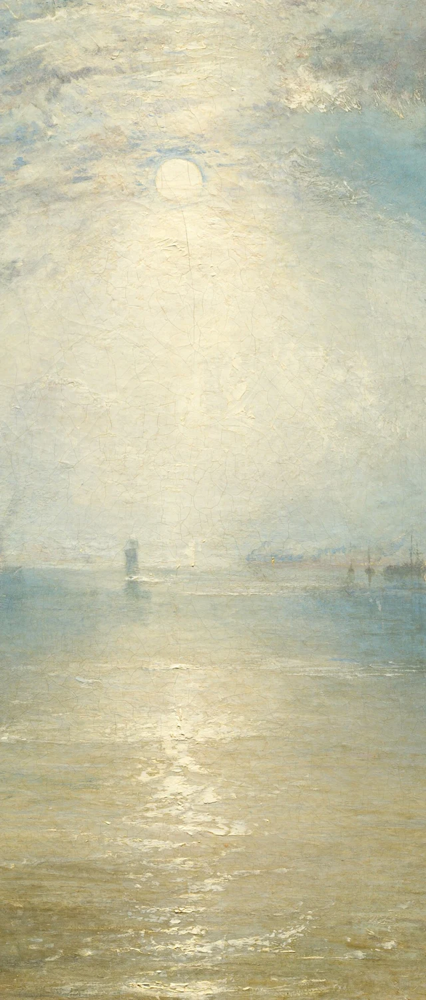
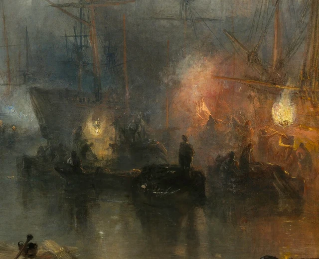
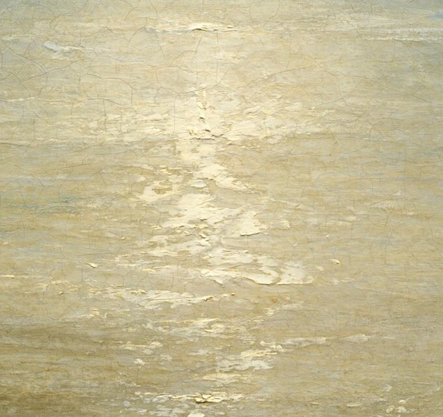

Beginnen wir beim Mond und folgen seinem Licht nach unten. Die blasse Scheibe steht etwas links von der Mitte. Unter ihr breitet sich eine Helligkeit aus, deren Grenzen kaum festzulegen sind. Sie durchdringt die fernen Schiffssilhouetten, erreicht das Wasser und zerfällt dort in einen Reflex, der auf uns zukommt. Wer diesem Weg folgt, erlebt den Hafen zunächst als weit und still. Erst die orangegelben Feuer rechts ziehen den Blick zur Seite. Unter den hohen Schiffsrümpfen beugt sich jemand vor, ein anderer steht aufrecht; weitere kleine Körper bleiben mit den dunklen Formen ringsum verbunden.

Turner malte 1835 eine Hafenszene aus dem Gebiet um Shields am Unterlauf des englischen Tyne. Das Wort keelmen im Originaltitel bezeichnet einen bestimmten Beruf. Diese Schiffer führten flachbodige Kohlenkähne mit geringem Tiefgang, sogenannte keels, zu den größeren seegängigen Kohlenschiffen. Dort schaufelten sie die Ladung aus den niedrigen Kähnen nach oben über die höheren Bordwände und in die Seeschiffe hinein. Das Verladen gehörte zu einer Transportkette, die Kohle aus den Bergbaurevieren in den Fernhandel brachte. Hier wurde der Brennstoff für die wachsende britische Industrie und das Leben in den Städten auf dem Fluss von einem Schiff ins andere gebracht, mit der Kraft menschlicher Arme und über hohe Bordwände hinweg. Geschichte des Kohlentransports; Die Kohlenschiffer am Tyne
Das Bild wurde noch 1835 in der Royal Academy ausgestellt. Auftraggeber war der Textilunternehmer Henry McConnel aus Manchester. Es ergänzte Turners Venice: The Dogana and San Giorgio Maggiore von 1834, das McConnel bereits besaß. Beide Hafenansichten standen damit in einer Tradition der Landschaftsmalerei und richteten sich zugleich an einen Sammler, dessen Vermögen mit Handel und Gewerbe zusammenhing. Werkgeschichte; Auftrag und Gegenstück
Für unsere Betrachtung ist eine einfache Unterscheidung wichtig: Helligkeit und Deutlichkeit fallen nicht immer zusammen. Das Mondlicht verbindet den Hafen zu einer großen, eindrucksvollen Ansicht. Die Feuer zeigen, wo gearbeitet wird. Wollen wir aber die Arbeitenden genauer sehen, müssen wir zwischen Dunst, Schiffsrümpfen und ineinandergreifenden Umrissen suchen. Das Bild lässt diese unterschiedlichen Erfahrungen des Sehens immer wieder aufeinandertreffen.
1 Vor uns öffnet sich das Wasser
Die Leinwand ist etwas mehr als einen Meter breit. Vor dem Original würden sich die Schiffe an beiden Seiten und die Wasserfläche dazwischen über ein entsprechend großes Blickfeld verteilen. Auf einem kleinen Bildschirm bleibt davon leicht vor allem die Verteilung von Hell und Dunkel übrig. Die Menschen, die wir später vergrößern werden, befinden sich schon im Gemälde am Rand einer sehr viel umfassenderen Ansicht.
Ungefähr die oberen zwei Drittel nimmt der Himmel ein. Dieses Verhältnis verändert den Maßstab: Die Masten sind hoch, die Menschen klein, und dennoch bleibt über beiden ein beträchtlicher Raum. Der Mond steht dabei keineswegs nahe am oberen Bildrand. Er sitzt vergleichsweise tief im Himmel, umgeben von hellen Wolken und Dunst. Das Blaugrau der Umgebung wird zu ihm hin lichter. Unterhalb der Mondscheibe beginnt schließlich auch die Trennung von Himmel und Wasser unsicher zu werden.
Der Horizont ist noch vorhanden. Einige Segel, dünne Masten und winzige Lichtpunkte dicht über dem Wasser markieren ihn in Abständen. Doch diese Zeichen sind zu fein, um beide Bereiche entschieden voneinander abzusetzen. Unser Blick kann auf seinem Weg nach unten über sie hinweggleiten. Erst an den breiteren Wellenzügen im Vordergrund merken wir wieder deutlicher, dass wir nun auf Wasser schauen. Die Grenze lässt sich auffinden, aber sie hält die Bewegung des Sehens kaum auf.
Die Schiffe rechts und links geben diesem offenen Weg seine Ränder. Links schneidet der Bildrahmen das nächste Segel an; dessen grauweiße Fläche ist leichter auszumachen als der darunterliegende Rumpf. Rechts verdichten sich Masten, Rahen und Taue zu einem dunklen Geflecht. Beide Seiten sind unterschiedlich aufgebaut, lassen aber gemeinsam den Blick in die Ferne frei. Wir scheinen uns bereits zwischen den Schiffen zu befinden. Vor uns bleibt eine Wasserbahn, in die das Auge weiter vordringen kann.
Ganz leer ist diese Öffnung nicht. Eine Boje links vorn, ein kleines Boot weiter draußen und ein flach im Wasser liegendes Holzstück im rechten Vordergrund bieten Zwischenstationen. Von den nahen dunklen Körpern wandert der Blick zu Segeln, die in der Ferne beinahe durchsichtig werden. So entsteht Tiefe schrittweise. Sie beruht nicht allein auf perspektivischen Linien. Ebenso wichtig ist, wie die Dinge nach und nach Einzelheiten verlieren und wie wenig schließlich genügt, damit wir noch ein entferntes Schiff erkennen.
Auch der Widerschein des Mondes führt uns durch diesen Raum. Er fällt nicht als gleichmäßige weiße Säule ins Wasser. In der Ferne bleibt das Licht breit und unbestimmt; näher bei uns erscheint es in waagerechten Spuren verschiedener Länge und Breite. Graugrün, helles Braun und dunkle Zwischenräume unterbrechen sie. Wir verbinden die Stücke zu einer Lichtbahn und sehen gleichzeitig, wie das Wasser diese Bahn auseinanderzieht. Die Tiefe zum Horizont und die kleinen Bewegungen direkt vor uns bleiben dadurch zugleich erfahrbar.

2 Näher an die Feuer heran
Wenden wir uns nun nach rechts unten. Hier fehlt die weite Öffnung der Bildmitte. Hohe Schiffsrümpfe stehen im Hintergrund, niedrige Kähne liegen davor. Dazwischen befinden sich die Menschen. Zwischen zwei helleren, weißgelben Lichtquellen brennen orangefarbene Flammen; Rauch und warmes Licht gehen ineinander über. Was zuerst wie wenige leuchtende Akzente einer Nachtansicht wirkte, erhält nun jeweils einen Ort. Und um jeden dieser Orte herum lässt sich eine eigene Tätigkeit suchen.
Relativ leicht finden wir den aufrecht stehenden Mann weit vorn. Kopf, Schultern und Oberkörper heben sich gegen die Helligkeit hinter ihm ab. Weiter unten verbindet sich sein Körper allmählich mit dem Dunkel des Kahns und der Ladung. Links von ihm ist jemand mit gesenktem Kopf nach vorn gebeugt. Rechts treten weitere gekrümmte Körper und schräg ausgestreckte, lange Stangenformen hervor. Ein Umriss wird sichtbar und bricht kurz darauf im benachbarten Schwarz wieder ab. Wir erkennen verschiedene Bewegungen, ohne um jeden Menschen eine geschlossene Linie ziehen zu können.

Mit dem Wissen um den Transportablauf bekommt der Höhenunterschied ein konkretes Gewicht. Die Kohle befindet sich bereits auf einem Boot. Dennoch muss sie aus dieser niedrigen Position über die hohe Bordwand des Seeschiffs und in das Schiff gelangen. Dazu gehören das Anheben, das Hinüberbefördern und das erneute Herabbeugen. Immer wieder muss Gewicht über eine Bordwand gebracht werden. Das Bild hält einzelne Körperhaltungen fest; die Geschichte des Kohlentransports erklärt, zu welcher fortgesetzten Arbeit sie gehören. Erst wenn beides zusammenkommt, verlieren die dunklen Gestalten ihre scheinbar beiläufige Rolle als Belebung eines nächtlichen Hafens. Der Arbeitsablauf
Wie das Licht einen Menschen vom Hintergrund löst, bestimmt zugleich, was wir von ihm erfahren. Ein heller Bereich hinter Kopf und Schultern kann deren Kanten schärfen, ohne das uns zugewandte Gesicht zu erhellen. Jemand fällt stärker auf und bleibt trotzdem als einzelne Person schwer erkennbar. Zwischen „Da steht ein Mensch“ und „So sieht dieser Mensch aus“ liegt hier ein kleiner Abstand, den zusätzliche Helligkeit nicht ohne Weiteres überbrückt.
Gerade deshalb lohnt es sich, bei den verschiedenen Haltungen zu bleiben. Wenn wir alles pauschal als „Arbeitersilhouetten“ bezeichnen, ebnen wir mit einem Wort Unterschiede ein, die das Auge eben erst entdeckt hat. Einer hält den Körper gerade, ein anderer zieht sich nach unten zusammen; anderswo streckt sich eine Form nach außen. Einzelne Gesichtszüge sind nicht auszumachen. Dennoch bilden die Menschen keine beliebig austauschbare Reihe von Zeichen. Wir können jeder erkennbaren Bewegung etwas länger folgen und die bereits sichtbare Verschiedenheit bewahren, ohne den Figuren eine nicht sichtbare Mimik oder eine erfundene Geschichte zuzuschreiben.
3 Was beim Zurücktreten verloren geht
Kehren wir von Abbildung 3 zur Gesamtansicht zurück, verändert sich das Verhältnis sofort. Das Beugen und Strecken, dem wir eben noch gefolgt sind, wird wieder winzig. Die Feuer bleiben dagegen auffällig. Menschen und Boote schließen sich zu einem Rhythmus dunkler Formen zusammen. Erneut übernimmt die lange Mondlichtbahn die Führung. Die Verladung verschwindet nicht; sie lässt sich nun leichter als ein Bestandteil der schönen Hafenansicht aufnehmen.
Der Titel übt auf diese Wahrnehmung einen leichten Druck aus. Er nennt die Schiffer und ihre Tätigkeit. Die größte Fläche des Bildes gehört jedoch Himmel und Wasser. Wir wissen, dass wir nach Menschen suchen sollten, während das Auge einem Licht folgt, das sehr viel ausgedehnter ist als jeder menschliche Körper. Titel und Darstellung widersprechen einander deshalb nicht. Zusammen machen sie die Frage nach der Hauptrolle zu einer Aufgabe, die sich erst im Betrachten beantworten lässt.
Turner gehört zu den zentralen Malern der britischen Romantik. In dieser Tradition können Staunen, Ehrfurcht und die Stärke einer Naturerfahrung ebenso wichtig sein wie die genaue Bestimmung des dargestellten Ortes. In dieser Nachtansicht verbinden sich Mondlicht, Dunst und die Größe des Hafens zu einem Anblick, der das Alltägliche übersteigt. Seine Anziehungskraft ist bildlich genau begründet: Der weite Himmel, die durchlässige Wasserbahn und der Wechsel zwischen kühlerem und wärmerem Licht ordnen unsere Aufmerksamkeit. Romantik und das Erhabene
Ein solcher Gesamteindruck hängt allerdings auch vom Abstand ab. Aus der Ferne fassen wir Menschen, Schiffe und Feuer leicht als stimmiges Verhältnis von Farben und Helligkeiten auf. Näher am Bild erscheint zwischen Kahn und Seeschiff wieder jene Höhe, die menschliche Körper unablässig überwinden müssen. Der Blick aus der Entfernung verliert dadurch nicht seine Berechtigung. Er braucht die nähere Betrachtung als Ergänzung, wenn in der Schönheit des Ganzen auch das enthalten bleiben soll, was dort getan wird.
Eine Besprechung von 1835 in der London Literary Gazette, die John Hayes im Sammlungskatalog der National Gallery of Art von 1992 zitiert, zeigt eine damalige Erwartung besonders deutlich. Sinngemäß bedauerte der Rezensent, dass solch prachtvolles Mondlicht Kohlenarbeitern zugutekomme; lieber hätte er es Liebenden auf dem Weg zu einem Treffen leuchten sehen. Diese Vorliebe verrät, welches Motiv man für angemessen hielt: Eine schöne Mondnacht sollte zu einer romantischen Handlung gehören. Schwere Arbeit schien dieses Lichts weniger würdig. Im Gemälde haben beide ihren Platz. Heute können wir daran prüfen, ob auch unser Blick heimlich auswählt, welche Menschen und Tätigkeiten in einer schönen Landschaft vorkommen dürfen. Hayes, gedruckte Seite 280
Besonders ergiebig wird das Bild, wenn wir zwischen den Entfernungen wechseln. Wer ausschließlich nach den Arbeitsverhältnissen fragt, übersieht womöglich die malerische Ordnung, die den Hafen so eindrucksvoll macht. Wer nur die Nacht bewundert, vergisst rasch, welche Arbeit zu dieser Ansicht gehört. Das Gemälde hält beides zusammen; auch unsere Betrachtung kann beides aushalten. Wir müssen seine Schönheit nicht erst beiseiteschieben, um die kleinen Menschen ernst zu nehmen.
Dabei verändert sich sogar das Wort „still“. In der Ferne liegt das Wasser flach, vorn zerfallen die Reflexe in sanfte Wellen. Sobald wir jedoch die Körperhaltungen rechts erkannt haben, tritt eine fortdauernde Tätigkeit in diese Ruhe ein. Das Bild gibt keinen Laut von sich, und trotzdem erhält die Arbeit einen Rhythmus. Sehen wir wieder zur Mitte, ist die anfängliche Stille nicht mehr leer.
4 Zweierlei Licht auf demselben Wasser
Mondlicht und Feuerlicht lassen sich zunächst als kühl und warm unterscheiden. Das trifft die grobe Verteilung: Ein blaugrauer Himmel umgibt die helle Mondscheibe; rechts bringen die Flammen Orange, Rot und Gelb in die dunkle Gruppe der Schiffe. Beide Bereiche ziehen uns an. Der Blick kann sich deshalb nur schwer dauerhaft auf eine einzige Mitte festlegen.
Bei genauerem Hinsehen teilt dieser Gegensatz das Bild aber nicht sauber in zwei Hälften. Auch um den Mond liegt ein milchiges Gelb. Das Wasser unter ihm wird nach vorn hin wärmer. Die Ränder des Feuerlichts gehen umgekehrt rasch in Grau und Braun über, und kleine ferne Lichter finden sich auch innerhalb des mondhellen Hafenraums. Wo kühlere und wärmere Töne einander nahekommen, verlieren sie ihre eindeutigen Grenzen. Die Lichtquellen sind verschieden, doch beide wirken in derselben Luft und auf demselben Fluss.
Besonders gut lässt sich das an den Spiegelungen verfolgen. Die mittlere Lichtbahn reicht auf uns zu; unter den Feuern rechts ziehen sich kürzere, gebrochene Reflexe ins Wasser. Der Fluss behandelt die verschiedenen Quellen nicht grundsätzlich anders. Er zerlegt beide in schwankende Stücke, lässt dunkle Zwischenräume stehen und verlängert zugleich die Spiegelbilder der Rümpfe. Wir können weiterhin unterscheiden, woher das Licht kommt, und seine verschiedenen Erscheinungen dennoch als Teile eines gemeinsamen Hafens wahrnehmen.
Rauch und Dunst verändern diesen Zusammenhang noch einmal. In der Nähe der Flammen sind sie warm gefärbt und verdecken Schiffe oder Körper. Weiter oben und in größerer Entfernung gehen sie in das Blaugrau des Himmels über. Es wäre voreilig, jeder Rauchspur einen bestimmten Brennstoff und Ursprung zuzuweisen. Dauerhaft beobachten können wir dagegen, was diese Luft mit der Sichtbarkeit tut: Stellenweise lässt sie Dinge hervortreten, anderswo erschwert sie deren Trennung. Unser Blick muss durch sie hindurch. Er erreicht die Gegenstände nicht durch einen leeren, vollkommen durchsichtigen Raum.
Hier kann auch das Gegenstück aus McConnels Sammlung einen Vergleich eröffnen. Ein britischer Kohlenhafen bei Nacht stand neben einer venezianischen Hafenansicht im Tageslicht. Die unterschiedliche Beleuchtung verbindet sich so unmittelbar mit der Wahrnehmung zweier Orte. Ob darin zugleich der wirtschaftliche Aufstieg Großbritanniens dem Niedergang Venedigs gegenübergestellt wird, bleibt auch für das Museum eine mögliche Deutung. Für das vorliegende Bild genügt zunächst eine engere, am Sichtbaren orientierte Frage: Wenn Schiffe und Handel zur Landschaft gehören, wie verändert das Licht die Art, in der wir sie betrachten? Zum Verhältnis der beiden Gemälde
5 Auch Licht hat eine Farbschicht
Noch ein Wechsel des Abstands führt weiter: vom Hafen zur gemalten Oberfläche.
Vergrößern wir den Widerschein im Vordergrund, verlieren viele helle Spuren ihre Glätte. Ihre Ränder sind unregelmäßig. Sie sehen wie kleine helle Stücke aus, die über die Fläche geschoben, aufgetragen oder daran entlanggezogen wurden. Daneben erscheinen Graugrün und Braun flacher, sodass die Lichtspuren eigene Formen annehmen. Auf dieser Größenstufe tritt die Vorstellung von Wasserwellen vorübergehend zurück. Wir sehen deutlicher eine Oberfläche, die ein Maler bearbeitet hat.

Der systematische Sammlungskatalog der National Gallery of Art von 1992 vermerkt einen pastosen, also dickeren Farbauftrag für die Mondscheibe und die Glanzlichter auf dem Wasser. Der Himmel ist dagegen dünner und fließender gemalt. Diese technische Angabe gibt unserer Beobachtung eine materielle Grundlage. Gerade einige der Stellen, die besonders licht und kaum greifbar wirken, bestehen aus vergleichsweise kräftig aufgetragener Farbe. Die luftige Wirkung des großen Himmels hängt wiederum mit einer dünneren Behandlung zusammen. Technische Beschreibung, gedruckte Seiten 278–280
Daraus lässt sich keine einfache Gleichung bilden, nach der dick stets hell und dünn stets fern bedeutet. Farbton, benachbarte Helligkeiten und die Richtung der Pinselzüge wirken mit. Präziser ist der Vergleich zwischen den Ansichten: Für sich genommen erscheinen die hellen Spuren in Abbildung 4 vereinzelt und körperhaft. Im ganzen Bild sammeln sich dieselben Spuren unter dem Mond zu flimmerndem Wasser. Die Farbe verschwindet dabei nicht. Aber aus ihrer Anordnung entsteht eine überzeugende Erscheinung. Das Gemälde verbindet beide Maßstäbe, sodass wir Farbe sehen und durch sie hindurch Licht wahrnehmen können.
Mit dem erneuten Schritt zurück führt uns der Widerschein in die Ferne, während die Feuer den Blick wieder zu den Menschen lenken. Inzwischen wissen wir, dass die hellsten Stellen nicht unbedingt die meisten Einzelheiten zeigen und dass die kleinsten Figuren für unsere Aufmerksamkeit keineswegs das geringste Gewicht haben müssen. Die genaue Betrachtung mündet in eine konkrete Hin- und Rückbewegung: vom anziehenden Licht zu den Arbeitenden und mit ihren erkannten Gesten zurück zum Hafen. Der Mond bleibt hell, die Nacht behält ihre Weite. Nur fällt es jetzt schwerer, die Menschen am Fuß der Schiffe beiläufig zu übersehen.
Optionale Vertiefung Mit SAE noch einmal hinsehen
Mit der Ästhetik von SAE, Self-as-an-End, lassen sich aus der bisherigen Betrachtung zwei eigene Versuche entwickeln. Die vorausgehende Bildlektüre steht für sich. Die Versuche geben uns eine zusätzliche Möglichkeit, ihre Beobachtungen selbst zu prüfen. Grundlagen der SAE-Ästhetik
Im ersten Versuch geht es um die Verteilung des Lichts. Betrachten wir das gesamte Bild zehn Sekunden lang und merken uns, wo der Blick zuerst verweilt. Anschließend decken wir die Feuer rechts mit einem Blatt Papier ab, sodass die mondhelle Wasserbahn sichtbar bleibt. Dann kehren wir die Anordnung um: Die mittlere Lichtbahn wird verdeckt, die Schiffe und Feuer bleiben frei. Eine vorübergehende Abdeckung reicht aus; die Bilddatei muss dafür nicht verändert werden.
Was bleibt jeweils von Weite, Enge, Tiefe und Richtung erhalten? Wandert der Blick leichter in die Ferne, wenn die Feuer rechts verdeckt sind? Drängen sich Hell und Dunkel stärker zusammen, wenn die mittlere Lichtbahn abgedeckt ist? Halten die Augen dann häufiger an kurzen Umrissstücken an? Der Wahrnehmungsaspekt von SAE lenkt die Frage darauf, wie sich etwas in diesem Augenblick zeigt und weshalb bestimmte Unterschiede darin mehr Gewicht erhalten. Nehmen wir die Abdeckung weg, können wir prüfen, ob die wechselseitige Anziehung der Bereiche wiederkehrt. Über die eindrucksvolle Gesamtwirkung lässt sich nun anhand gemeinsam auffindbarer Beziehungen sprechen. Die Schönheit der Wahrnehmung
Der zweite Versuch braucht einen zeitlichen Abstand. Schließen wir die Abbildung und lassen etwas Zeit verstreichen. Erst dann notieren wir aus dem Gedächtnis drei Einzelheiten der rechten Seite. Anschließend öffnen wir das Bild erneut und vergleichen, was tatsächlich haften geblieben ist. Vielleicht erinnern wir uns gut an die Farbe der Feuer, aber kaum an die Positionen der Körper. Vielleicht hat das Wissen über den Kohlentransport vor allem den Höhenunterschied zwischen Kahn und Seeschiff im Gedächtnis verankert. Erinnerung wählt aus. Diese Auswahl beeinflusst wiederum, wonach wir beim nächsten Mal suchen.
SAE behandelt Erinnerung und Erwartung im Bereich der Kognition. Der Zugang bleibt hier ganz konkret: In welcher Gestalt ist das Bild noch vorhanden, wenn wir es gerade nicht sehen? Suchen wir beim Wiederöffnen nach den erinnerten Feuern oder nach Menschen, die in unserem ersten Eindruck fehlten? Der Vergleich kann den bisherigen Eindruck korrigieren und damit verändern, was wir von der nächsten Begegnung erwarten. Schon das Erkennen eines Schiffes oder eines Menschen greift auf Erfahrung zurück. Dieser Versuch richtet den Blick darüber hinaus eigens darauf, was von einer Erfahrung bleibt und wie ein neuer Blick das Behaltene verändert. Die Schönheit der Kognition
Zum Schluss können wir beide Ergebnisse neben den ersten Eindruck stellen. Wer das Bild weiterhin „still“ nennen möchte, kann die Wasserfläche oder die Abstände benennen, die dieses Wort tragen. Wer es nun geschäftiger erlebt, kann auf die Bewegungen zeigen, die etwas verändert haben. Unterschiedliche Empfindungen müssen nicht verschwinden; ihre Anhaltspunkte lassen sich jedoch miteinander besprechen. Die Theorie hilft so, aus „Mir gefällt diese Nachtansicht“ eine genauere Frage werden zu lassen: Welche Beziehungen habe ich darin gesehen, und wem möchte ich beim nächsten Hinsehen meine Aufmerksamkeit schenken?
Hinweise zu Bildern und Quellen
Diese Betrachtung beruht auf der von der National Gallery of Art bereitgestellten Aufnahme mit 4096 × 3042 Pixeln. Die Gesamtansicht bewahrt sämtliche ursprünglichen Bytes der heruntergeladenen Datei. Die drei Details wurden ausschließlich anhand der verzeichneten Koordinaten ausgeschnitten. Farben und Schärfe wurden nicht verändert; es gab keine Restaurierung, Retusche, Ergänzung oder generierten Bildinhalte. Bildschirmfarbe, Helligkeit und Vergrößerung beeinflussen die Wahrnehmung. Angaben zur Maltechnik stammen aus dem verlinkten Katalog und ergänzen die Betrachtung der digitalen Aufnahme.
Für die entsprechenden Bilder gilt die CC0-Regelung der National Gallery of Art. Diese Freigabe erlaubt nicht zugleich die vollständige Übernahme ihrer Forschungstexte. Bildlektüre und Betrachtungsversuche sind eigenständig verfasst. Die Links belegen historische Angaben, Arbeitsabläufe und maltechnische Informationen; die Deutung ist nicht als Bestätigung durch das Museum zu verstehen. Siehe auch Quellenverzeichnis und Bildnachweise und Ausschnittsverzeichnis.